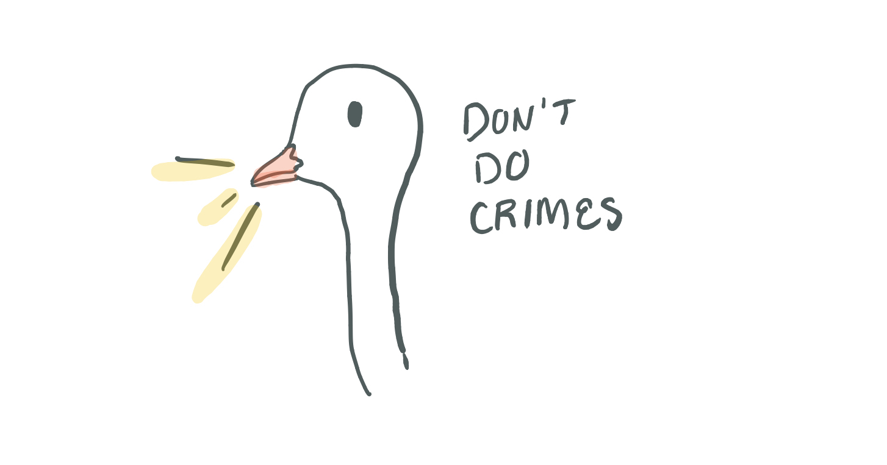

Cryptoscarf
How to solve it
Erin Browning
Slides will be available on Twitter @efrowning
Erin Browning
Senior Security Engineer
a.k.a., I'm a hacker
The cryptoscarf started when I met @fbz at Blackhoodie in April of this year.
What kind of crypto can I do that'll fit in a scarf?
Idea 1: knits + purls for each bit
How much data can I fit in a scannable, knitted QR code?
Decided on RC4 for the cryptography:
- Short messages are vulnerable to repeated key attacks
- Famous for WEP and TLS vulnerabilities
First of all, can you even XOR?

see you on the internet